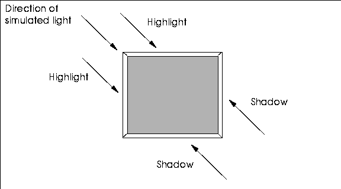
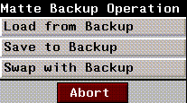
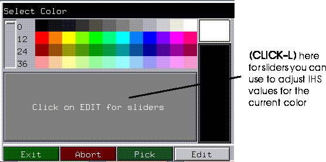

[N-World Contents] [Book Contents] [Prev] [Next] [Index]
Working with Images
In this chapter we'll expand our familiarity with different types of inks, and look at N-Paint's powerful brushes. We'll also learn how to pull and use an RGB matte.
In this Chapter
We'll be using the image we created in the last lesson. In this chapter, we'll introduce:
Before you Start
We'll be using the image we modified in the last lesson, so load the image onto the canvas.
Using the Brush
Our first task will be to add some detail to the rocks in the background of the hero. We'll do this by using some shadow and texture effects with the Brush.
1. (CLICK-L) on the Brush icon in the Tool Box.
Figure 2.1 The Brush icon
- The Brush parameters appear in the Tool Parameters section of the menu
Figure 2.2 Brush parameters
Set your Brush parameters to roughly match those in Figure 2.2.
2. Select the Color ink, and make white the current color.
3. (CLICK-L) on Use Texture in the Texture options portion of the menu.
- When you toggle Use Texture several new parameters appear:
Figure 2.3 Texture parameters
4. (CLICK-L) on Image and select tex-fragment from the pop-up menu that appears.
5. In the Drawing Options portion of the menu, (CLICK-L) on Shadow to toggle shadowing.
- Shadows are one of the most powerful features of N-Paint brushes. You can use shadows to create realistic 3D textures for your images.
6. (CLICK-L) on the Set button next to Shadow in the Drawing Options section of the menu.
- The Shadow Parameters dialog appears:
Figure 2.4 Shadow Parameters
Shadow effects are designed to simulate the interaction of light on 3D surfaces in a scene.
Shadows have two primary components, the Shadow and the Highlight. The Shadow Angle is the direction from which the simulated light is "shining." Distance controls the thickness of the highlight or shadow. Use a larger number for distance to simulate more relief in the surface.

Figure 2.5 Shadows created using a direction of NW->SE
7. (CLICK-L) on Highlight and select a red-tan color.
- We'll use this color to show some highlights in the rocks behind the hero.
8. Set Distance for the Shadow to 2, for the Highlight to 1.
- These are purely arbitrary values, but they do simulate somewhat deeper shadows than if the Shadow and Highlight values were equal.
9. (CLICK-L) on Do It.
10. (CLICK-L) on Use in the Matte section of the Commands menu.
11. Paint on the canvas.
- Experiment with using different parameters to create different shadowing effects. Load different textures and experiment with these as well.
- Note. Generally, you'll want to paint with darker colors on the canvas first, and follow with lighter colors, in the same way that you'd apply highlights to an image after you had finished painting it.
- Figure 2.5 shows what our image looks like after using our round brush with texture and shadow effects to make the stones in the background look a little more three-dimensional.
Figure 2.6 The hero with background
Saving your Shadow Brush
Now that you've created a shadow brush you really like, let's save it so that we can use it again in the future! Tool Boxes, like images and color palettes, are N-Paint elements which can be saved to disk and reused at time.
12. With your custom Brush selected, (CLICK-L) on the custom Tool Box toggle.
Figure 2.7 The custom Tool Box toggle
- The current custom Tool Box appears. It's empty now, but we're going to add our new brush.
Figure 2.8 Empty custom Tool Box
13. (CLICK-L) on one of the empty tool slots.
- A dialog appears, which you can use to name your brush. Give it a name that is short, but which also gives some idea of the appearance and function of the tool.
Figure 2.9 Naming your custom tool
- After you've named your tool, (CLICK-L) on Done.
Your new tool appears in the custom Tool Box.

Figure 2.10 Custom tool with your tool
Saving your Custom Tool Box
To save your custom Tool Box to disk for use later:
14. (CLICK-L) on the magenta tinted Tool Box field (see Figure 2.10).
- The Tool Box file operations menu appears.
Figure 2.11 Tool Box menu
15. (CLICK-L) on Save, and enter a directory and filename for your Tool Box.
To load a Tool Box, all you need to do is (CLICK-L) on the Tool Box field, then (CLICK-L) on Open. Then, choose the path and filename for your Tool Box, just as you do when opening an image.
Blurring the Background
Now that we've increased the visual complexity of the background, let's use a blur effect to introduce the illusion of depth into the image.
16. Select the Polygon tool and the Blur ink.
- Leave the Blur ink parameters at their default values. Make sure the Polygon tool is not in outline mode.
17. (CLICK-L) on the Texture field In the Texture Options portion of the Paint menu.
- A pop-up menu appears, listing your texture options.
18. (CLICK-L) on Gradient in the pop-up menu to select it.
- The Gradient parameters menu appears:
Figure 2.12 Gradient Texture parameters
- Using a gradient texture applies the ink through the shape an additional "local" matte. If you apply ink through a texture, both the specified texture and the alpha channel of the image (if Use is turned on) affect how much ink is applied to the canvas.
19. (CLICK-L) on the  button to choose a horizontal gradient.
button to choose a horizontal gradient.
- The Left and Right parameters control how steep the gradient is from one end to the other. For example, setting Left to 1.0 and right to 0.0 means the ink will be applied at 100% on the left, then fall off down to 0% on the right.
- Note: Make sure that you have turned off any shadowing effects before applying the blur ink. If you don't, a "shadow" will appear around the area you blurred.
20. Using the Polygon tool, outline the section of rocks on the right side of the road.
- Be sure that the matte is in Use mode.
- When you (CLICK-M) to end the polygon, N-Paint will apply the blur effect to the rocks on the right hand side of the trail. If the blur is not visible enough, try selecting a 7x7 blur in the Blur ink parameters and redoing the shape operation.
21. If you wish, repeat the process for the rocks on the left side of the trail.
- To get the same effect, though, reverse the direction of the gradient by setting Left to 0.0 and Right to 1.0.
Pulling a Chroma Key Matte
Now we're going to apply a gradient ink to the sky behind the warrior. Our hope is to simulate the last moment of deep evening twilight just before the blackness of night descends entirely. To do this, we'll have to extend the matte to cover everything in the image except for the black sky.
In our current image, the matte covers just the character, and is very handy for painting in the background. We could replace this matte with our new sky matte, but then we'd have to recreate it later if we wanted to do anymore work to the backgrounds around the hero.
Fortunately in N-Paint you can save a copy of the current matte to memory (or disk), change the matte, then reload the original matte at some point in the future. In face, mattes and RGB components can be loaded and saved completely independently.
The Backup matte is essentially just a space for you to store this backup matte image. You can swap two mattes between the current image and the backup matte image, illustrated schematically in Figure 2.13.
Figure 2.13 N-Paint reserves a special area for a backup matte
22. (CLICK-L) on Backup in the Matte section of the commands menu.
Figure 2.14 The matte controls
- A pop-up menu of matte backup options appears:

Figure 2.15 Matte backup operations
23. (CLICK-L) on Save to Backup.
- N-Paint will ask you to confirm your action. (CLICK-L) on Yes.
Now that we've saved the matte that protects our character, we're ready to create our new matte.
24. (CLICK-L) on Add and View in the Matte modes menu.
25. (CLICK-L) on the Quad tool icon in the Tool Box
Figure 2.16 Quad tool icon
26. Select the Chroma Key ink.
- The Chroma Key parameters appear in the ink parameters section of the menu:

Figure 2.17 Chroma Key parameters
27. (CLICK-L) on RGB
- You can pull a matte based on the RGB values of the image, or on the Intensity, Hue, and Saturation values. We'll pull an RGB matte now, but IHS mattes are covered in "Pulling an Intensity Matte," on page 3-11.
The concept behind an RGB matte is relatively simple: you define a range of colors which are completely protected from being painted on, and optionally an additional range which are protected to a lesser degree. The fact that portions of a digital matte can be more or less opaque than others is the key to understanding digital mattes.
The range that is absolutely protected is the hard range. The hard range is defined relative to a starting color, called the seed-color. The soft range defines an additional area of the color spectrum over which the opacity of the matte drops from 100% to 0%.
Figure 2.18 How Chroma Keys work
28. (CLICK-L) on the Color field in the Chroma Key ink parameters menu.
- This color will serve as the seed color for our RGB matte. A color picker appears over the canvas.
29. Use the color picker to pick the black sky behind the hero.
30. (CLICK-L) on Do Full Canvas.
- The new matte should appear on the canvas, covering the black sky. Of course, this is exactly the reverse of what we need, since we want to paint on the sky and protect the rest of the canvas.
- Note: If you don't see your matte, it's usually because you either don't have matte in Add and View mode, or because you didn't (CLICK-L) on Do Full Canvas. Also make sure you're not in Outline mode.
31. (CLICK-L) on the Rev button in the Matte section of the menu.
Figure 2.19 Location of the Matte Reverse button
- This reverses the matte; the open and protected areas are swapped.
- Aaah. That's better. Now we can paint on the sky to our heart's content with no worries about altering the rest of our image.
Adding the Twilight
We'll use the gradient ink again to add the twilight to our scene.
32. Select the Fill tool from the Tool Box.
33. Select the Gradient 2 ink.
- Set up the Gradient ink to be a vertical gradient. Select Black for the top color and a deep blue for the bottom color.
- If you can't find a shade of blue that looks right, you can use the Color Editor to adjust the Intensity, Hue, and Saturation of one of the blues on the palette to suit your tastes.

Figure 2.20 The Color Editor
34. (CLICK-L) on Use and View in the Matte modes section of the menu.
- If you forget and leave the matte in Add mode, the gradient will be applied to the matte. Should this happen, just (CLICK-L) on Undo, select the appropriate matte mode, and (CLICK-L) on Redo.
35. (CLICK-L) with the Fill tool on the sky.
- The Gradient ink is applied over the unprotected area of the image.
Figure 2.21 The image with the twilight applied
The matte we just created might prove useful in the future, so we'll save it to file. Later we can load it back into our image if we need to.
36. (CLICK-L) on File:>Save Matte
- The Save Matte dialog appears:
Figure 2.22 The Save Matte dialog
- Specify a path and filename for the matte image. You can save mattes to memory, to a file on disk, or to both. In this case, (CLICK-L) on Both.
- Note: You cannot save images to the /usr/local/ngc/demo/images directory or any other subdirectory of /usr/local/ngc. Be sure to specify a directory for which you have the necessary write permissions!!
37. Save your image.
Congratulations!
You've unlocked the power of N-Paint. There's no way we can outline all the different combinations of brushes, tools, and inks, to say nothing of the different effects you can get by manipulating tool and ink parameters. All that's really important is that you understand that you can apply any ink to the canvas through any tool.
But just to be helpful, here are brief descriptions of each ink. For more complete descriptions, consult the N-Paint Reference Guide.
Table 2.1 Ink types
|
Family
|
Ink
|
Description
|
|---|
|
Brush
|
Color
|
Applies color to the canvas. You pick the color from a color palette.
|
|
Pattern
|
Applies a repeating pattern to the image. Usually used with the cutout brush.
|
|
Smear
|
Smears the colors under the brush.
|
|
Vapor
|
Moves pixels away from or toward the center of the brush.
|
|
Reveal
|
"Scrapes" away paint from the foreground image to reveal a background image.
|
|
Color
|
Gradient 2
|
Applies a two color gradient to the image.
|
|
Gradient 4
|
Applies a four color gradient to the image.
|
|
Multi Grad
|
Applies a gradient of up to 12 colors to the image. Instead of picking individual colors for this ink, you select a an entire palette row (which you can customize).
|
|
Recolor
|
IHS Recolor
|
Modifies colors already in an image by changing their intensity, hue, or saturation values.
|
|
RGB Recolor
|
Modifies colors already in an image by changing their RGB values.
|
|
Equalize
|
Equalizes contrast across the areas where it is applied. This can be effective for correcting washed out or very dark images.
|
|
Posterize
|
Reduces the number of colors in the area to which its applied.
|
|
Colorize
|
Assign colors to grayscale values in grayscale images.
|
|
Randomize
|
Adds an adjustable amount of noise to an image; useful for creating a "grainy" effect.
|
|
Swap RGBA
|
Swap the components of one channel with those of another channel.
|
|
Filter
|
Blur
|
Blurs the area to which it is applied.
|
|
Sharpen
|
Sharpens edges and generally makes the picture look more in focus.
|
|
Shrink
|
Reduces the size of bright areas of the picture.
|
|
Expand
|
Increases the size of bright areas of the picture.
|
|
Despeckle
|
A noise filter, eliminates speckles and other noise from the area to which it's applied.
|
|
Mosaic
|
Pixelates the area under the brush. The "cell" size for each pixel can be specified in both the X and Y directions.
|
|
Fields
|
Filter images destined for video, specifying odd or even fields.
|
|
Scatter
|
Displaces pixels both vertically andhorizontally to create "streaking" effects in the image
|
|
Distort
|
Distorts an image without smearing it.
|
|
Composite
|
Reveal image
|
Wipe away part of one image, pulling through an image on a layer below.
|
|
Scale image
|
Copies an image into the target shape, scaling it at the same time.
|
|
Warp Image
|
Same as Scale Image, except that you can change the shape of the revealed image. For example, you can warp a rectangular image into an irregular polygon shape.
|
Chroma
Key
|
Chroma Key
|
Create a matte based on the image's RGB or IHS values.
|
|
Edge Key
|
Create a matte using an edge detection filter (along edges of high contrast in an image).
|
Move
Pixels
|
Shift
|
This ink rubberstamps pixels from one area of an image to another. You can specify the offset numerically or graphically.
|
|
Flip
|
Use this area to invert or rotate an area of the image.
|
|
Mirror
|
Creates a mirror image of one half the area under a shape to the other half. This is a handy ink for creating reflections.
|
|
Magnify
|
Creates a "blowup" of the area to which it's applied, as if you had "zoomed in" on the area. The magnification scale can be set manually.
|
|
Special
|
Emboss
|
Creates the illusion of "raising" an area of the image by creating a drop shadow/3D effect.
|
[N-World Contents] [Book Contents] [Prev] [Next] [Index]
 Another fine product from Nichimen documentation!
Another fine product from Nichimen documentation!
Copyright © 1996, Nichimen Graphics Corporation. All rights
reserved.